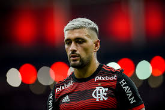

Esse é o camisa 10 do Mengão
Quem é De Arrascaeta?

Giorgian Daniel De Arrascaeta Benedetti (nascido em 1º de junho de 1994, Nuevo Berlín, Uruguai) é um meia-atacante uruguaio, um dos maiores ídolos recentes do Flamengo e do futebol sul-americano. Com técnica refinada e visão de jogo, destacou-se no Defensor Sporting e Cruzeiro antes de consolidar sua carreira no Flamengo
Melhores Jogos com a camisa do Flamengo
- 🎥Flamengo x Goiais 👉 Melhores Momentos
- 🎥Flamengo 2×0 Espérance – Mundial de Clubes 👉 (gols e lances)
- 🎥 Flamengo x Palmeiras - Gol de Arrascaeta 👉 Melhores Momentos
- 🎥 Vélez Sarsfield 2 x 3 Flamengo - Libertadores (Arrascaeta e Flamengo viram) 👉 Melhores Momentos
- 🎥 GRÊMIO 0 x 2 FLAMENGO – Melhores Momentos (Brasileirão) 👉Melhores Momentos
👉
🎥